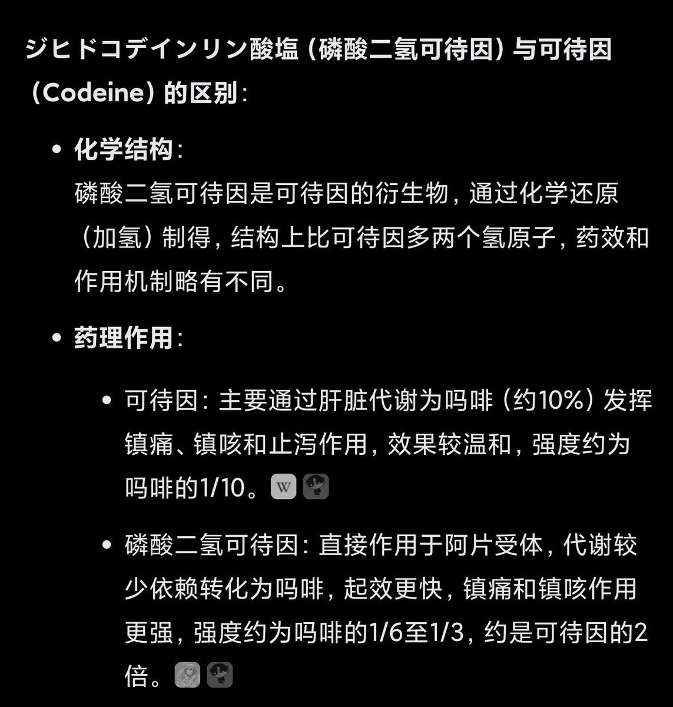

🍀🍥竹蜻蜓🍥🍀账号暂时由Lumin接管
@zqtlovekris99
@SalviaSWC AI说二氢可待因强度是可待因的两倍？🤔我不懂喵，真的假的，我感觉o白兔也就那样啊

鼠尾草～🌿
@SalviaSWC
有趣的事实:
氯苯那敏抑制CYP2D6代谢酶。可待因通过CYP2D6酶代谢生成吗啡，才能产生药效。这意味着氯苯那敏会抑制可待因的药效。
但白兔bron中同时含有二氢可待因和氯苯那敏，这可能导致药效降低。而事实却是od白兔bron仍然产生药效，这是因为二氢可待因无需代谢，自身就有药效，二氢可待因≠可待因。 https://t.co/MUKvIzJgVa